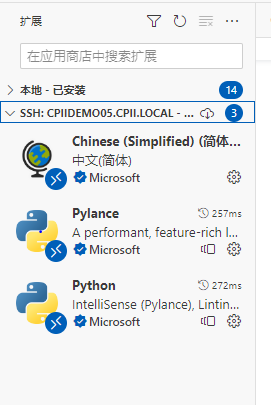

Vscode¶
Remote Development [extention]¶
远程修改与调试服务器上的代码，同时具备代码高亮与补全功能，就和在本地使用VScode一样
远程主机安装ssh-server(雨女无瓜)
本地主机安装ssh-client
check 有没有 cmd
ssh
vscode 安装Remote Development 插件
extensions 里 download
连接主机
ctrl+shift+psearchRemote-SSH connect to Hostssh <用户名>@<hostname>在 SSH 连接时，格式通常为 ssh <用户名>@<hostname>，其中 <用户名> 表示你在远程主机上登录时使用的用户名，<hostname> 表示远程主机的名称或 IP 地址
修改设定
ctrl+shift+psearchRemote-SSH Open SSH Setting✔
Show Login Terminal显示登录控制台选项。❌
Use Local Server，不使用本地服务器，因为远程开发，而非本地开发，如果不取消远程开发配置无法正常工作。
免密连接 _WIN10_
修改 自己 设定，告诉它 private key 的位置
ctrl+shift+psearchRemote-SSH Open SSH configuration File, 参照ssh连接主机的命令ssh <用户名>@<hostname>
Host <别名, 你为远程主机指定的唯一别名> HostName <hostname：IP 地址或域名> User <用户名，在工作站上的用户名> Port <端口号： 一般是22 openSSL> IdentityFile <私钥文件路径，自己在终端先配置密钥> # e.g. Host company HostName company.local Port 22 IdentityFile C:\user\.ssh\id_rsa修改 远程主机， 把自己的 public key 发给它，在远程机器用公钥生成authorized_keys
修改
/home/user/.ssh/authorized_keys, 如果没有就创建创建
mkdir "~/.ssh" && touch ~/.ssh/authorized_keys修改
vim authorized_keys打开自己的 public key (一般是
C:\user\.ssh\id_rsa.pub)复制粘贴进去。虽然很长，但公钥文件的所有内容只有一行
人们可以将任意数量的公钥添加到 autorized_keys 文件中。因此该文件包含多行，每个公钥一行。这使得多台机器在工作站上注册。
如果询问密码，那就是没配置好，重新检查一下
- Reference
[VScode Remote 远程开发与调试](https://www.jianshu.com/p/0f2fb935a9a1)
[VScode连接服务器](https://blog.csdn.net/weixin_43466026/article/details/121416372)
[Using Conda Environment Remotely with Visual Studio Code](https://hackmd.io/@MingRuey/HJOJ30ajO)
[Remote Access to the Workstation](https://hackmd.io/9iVBJfITQwy8tIz9ubgorw?view#Q-How-can-I-avoid-typing-password-each-time)
配置¶
插件配置
登陆上远程服务器后，插件栏就变成了本地和远程两个部分。登陆上后远程自己也会自动安装插件，最后可以手动比对一下， 如果哪个没有自动安装上就要自己再安装。并且配置过程和本地debug配置过程是一样的
SSH 配置¶
practical use¶
- 在本地机器生成密钥对(公钥+私钥)：
ssh-keygen 一般在
C:\user\.ssh里，隐藏文件夹id_rsa.pub是公钥，id_rsa是私钥如果已经存在会提醒是否 overwrite
- 在本地机器生成密钥对(公钥+私钥)：